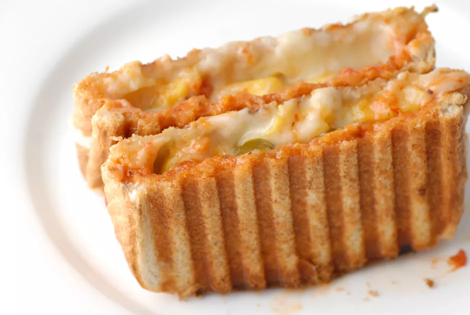

Odin Recipes'
Grilled Sandwitch Recipe

Ingredients:
- 2 slices cheese
- 2 slices bread
- 1 tablespoon salted butter, softened, or mayonnaise
Steps
- Allow your panini press to heat up for about 7 minutes. If your press has a temperature range, check the manufacturer's instructions.
- Place the cheese between the slices of bread and coat the outside of the bread with either the butter or mayonnaise.
- Carefully place the sandwich in the panini maker and press the lid down, gently enough so that it doesn't completely smoosh the sandwich but enough that both sides are touching the heated grates. Allow the sandwich to cook for a few minutes until the cheese has melted and the bread has crisped up, 5 to 7 minutes.
- Remove the sandwich from the maker and allow it to sit for a few minutes before serving so that the cheese can thicken up and won't ooze out when you cut the sandwich.
- Enjoy!
Go to Home||Go to Top